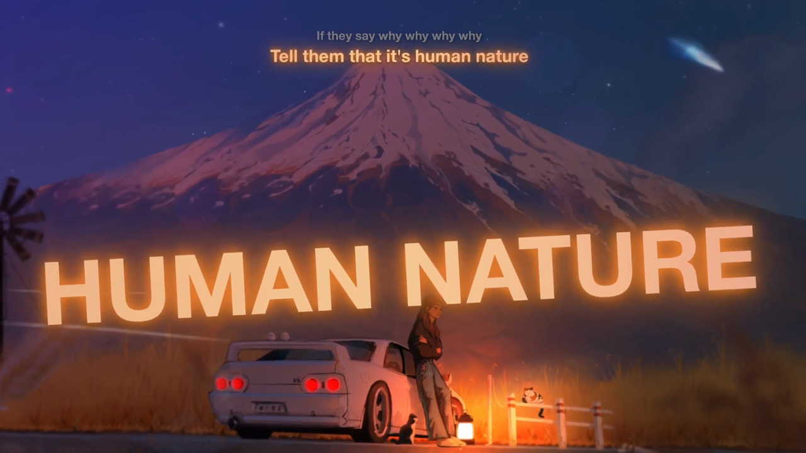

Comme un edit, en direct
Pas une simple ligne de texte dans un coin : les paroles bougent avec la musique.
Mot à mot
Chaque mot s'allume au moment où il est chanté, comme sur Spotify ou Apple Music.
Couleurs de la pochette
Le texte et son halo prennent les trois couleurs les plus marquantes de l'album.
Ça pulse sur le beat
Le texte grossit sur la grosse caisse, le refrain s'affiche plus grand, les mots tenus tremblent.
Pensé pour jouer
Les paroles évitent la minimap, la barre de sorts et le chat. Profils prêts pour League of Legends, Cyberpunk 2077 et World of Warcraft.
Le titre en géant
Quand le chanteur prononce le titre du morceau, il s'affiche en très grand.
Traduction
Une traduction française discrète sous chaque ligne, pour les chansons étrangères.
Toutes tes applis
Spotify, YouTube Music, Deezer, Apple Music, ou n'importe quel lecteur que Windows reconnaît.
Sans risque
Rien n'est injecté dans le jeu, donc aucun souci d'anti-cheat. Aucun compte de musique n'est demandé.
Trois façons de les afficher
Classique
Les lignes défilent en haut de l'écran : à gauche, au centre ou à droite.
Edit
Chaque ligne surgit à un endroit différent, légèrement penchée.
Machine à écrire
Les lettres s'écrivent une à une au fil du chant, avec un curseur.
Tout se règle en direct
Un panneau de contrôle pour le mode, les couleurs, la police, la taille et les sources de musique.


Prêt en une minute
Télécharge et lance
Un seul fichier FollowTheLyrics.exe, rien à installer.
Mets ta musique
Les paroles sont trouvées toutes seules et gardées en mémoire pour la prochaine écoute.
Joue en fenêtré sans bordure
C'est le mode d'affichage qui laisse les paroles passer devant le jeu. Ctrl Alt L les masque à tout moment.
Questions fréquentes
Windows affiche « Windows a protégé votre ordinateur »
C'est normal pour un petit logiciel qui n'a pas de signature payante. Clique sur « Informations complémentaires », puis « Exécuter quand même ». Le code est entièrement visible sur GitHub.
Est-ce que je risque un ban dans mon jeu ?
FollowTheLyrics est une simple fenêtre transparente posée au-dessus du jeu, comme une fenêtre Discord. Il ne lit pas la mémoire du jeu et n'y injecte rien. Il demande seulement à Windows quel programme est au premier plan.
Les paroles n'apparaissent pas par-dessus mon jeu
Le jeu est sûrement en plein écran exclusif : Windows n'autorise alors aucune fenêtre par-dessus. Passe-le en « fenêtré sans bordure » dans ses options vidéo. Le logiciel te prévient quand il détecte ce cas.
Certaines chansons n'ont pas de paroles mot à mot
Tout dépend de ce qui existe pour le morceau. Quand le découpage mot à mot n'est pas disponible, les paroles s'affichent ligne par ligne. Quelques titres rares n'ont pas de paroles du tout.
D'où viennent les paroles ?
De NetEase Cloud Music et de LRCLIB, et la traduction de Google Traduction. Ces services ne sont pas officiels et peuvent changer.
Est-ce que ça fait baisser les FPS ?
L'écran n'est redessiné que lorsque quelque chose bouge, et seulement autour du texte.